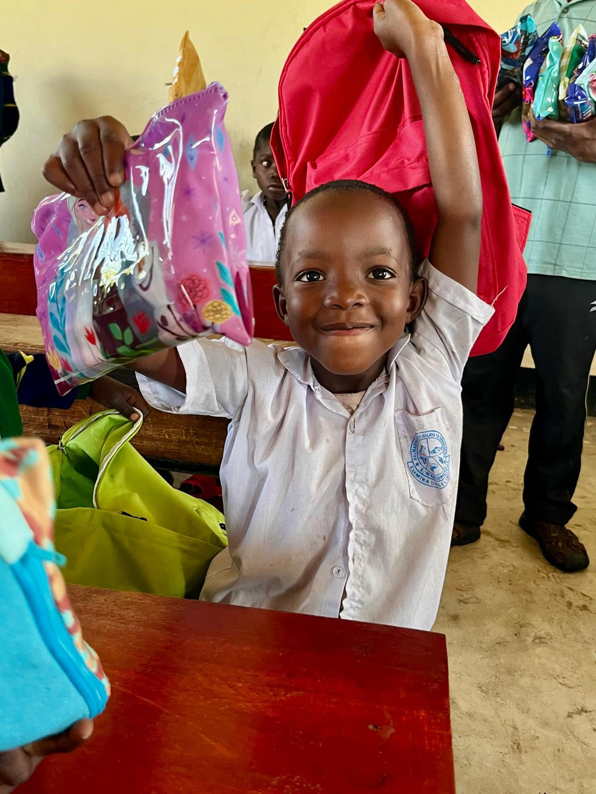
At FIGY Travel Foundation, we enable people from all walks of life to have the opportunity to make a positive life-changing impact in rural communities in the beautiful African country of Tanzania through volunteering vacations. Our volunteer programs are the most affordable and sustainable way to immerse yourself in new cultures, connect with like-minded international volunteers and make a difference through work and travel.
2.400+ goods donated in total
276 children and teachers sponsored
A total of over 15 volunteers in our Volunteer Family
3 water wells placed
Mwanza region, Tanzania
€ 1.974 (indicative) For 6 weeks
Mwanza region, Tanzania
€ 1.974 (indicative), For 6 weeks
Mwanza region, Tanzania
€ 1.974 (indicative), For 6 weeks
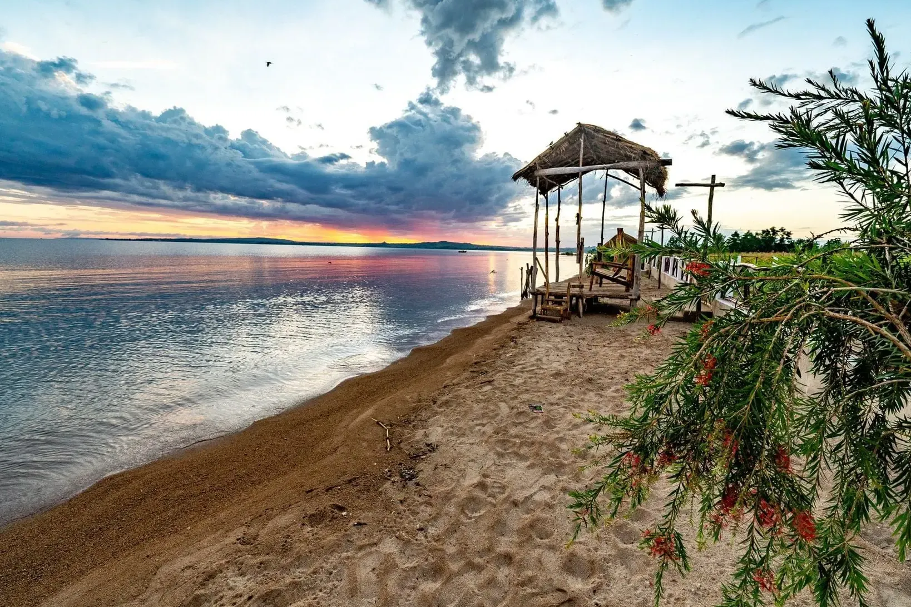


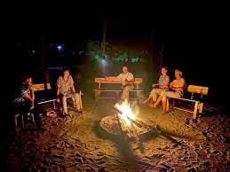

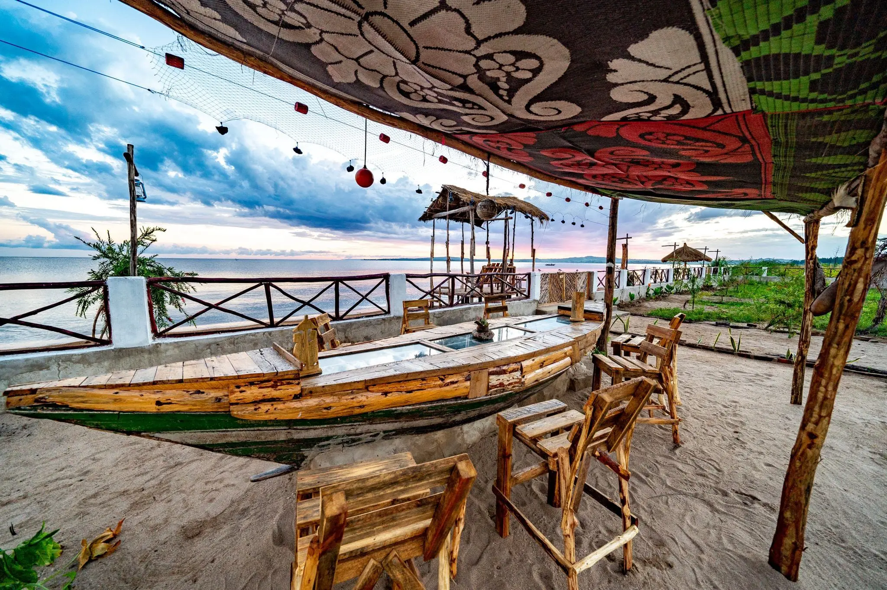
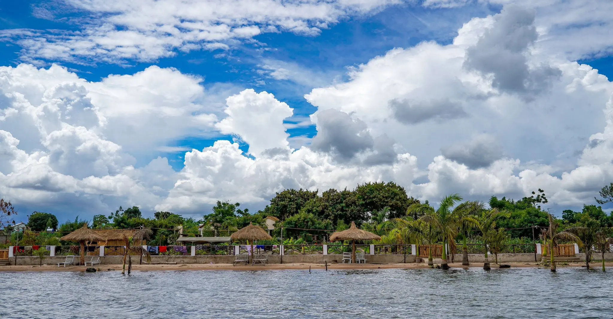
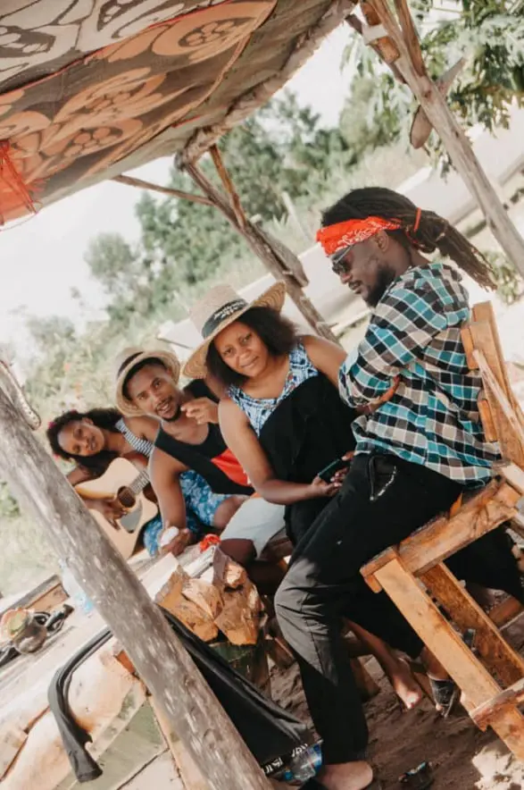
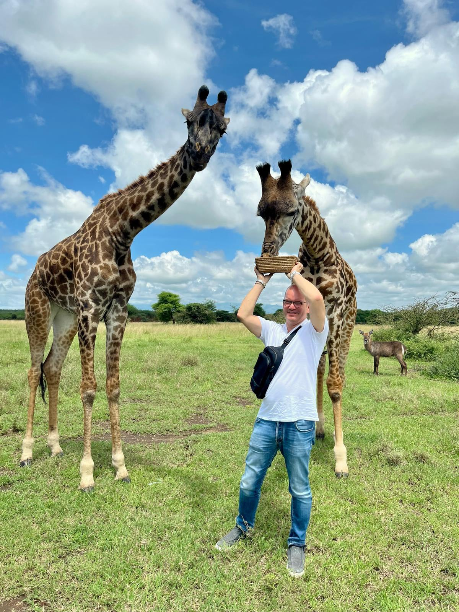
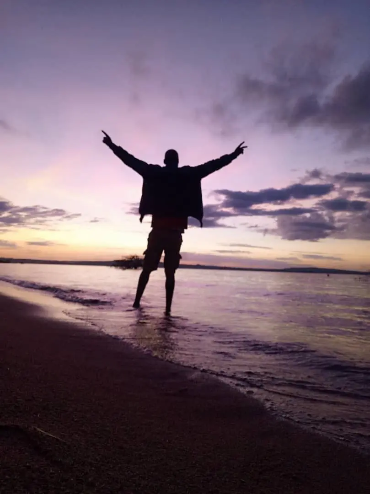
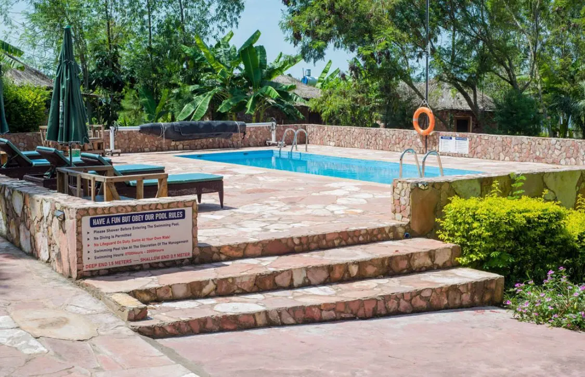
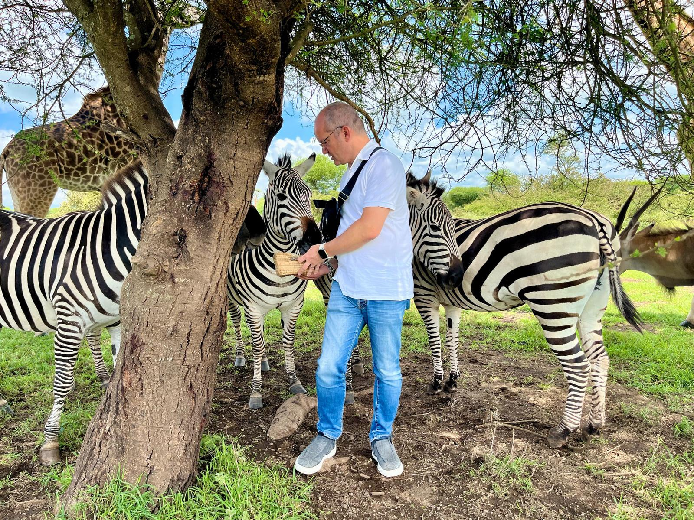
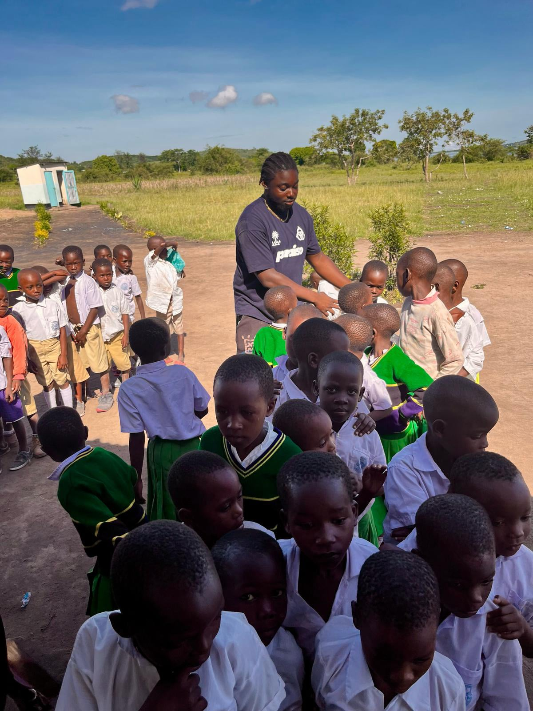

"My trip to Tanzania has been one of my best experiences in life"
"I got the opportunity from my school to do my internship in another country, and I was really interested in Tanzania. Me and three other students were introduced to FIGY Travel and Stichting Support School Fees (SSF), and we felt an instant connection. So, in October 2022 we stayed at Mwanza Lake View Farm for three months! We volunteered at the schools and visited a lot of places. Like a prison, some farms, Mwanza town, Juma island and many kinds of schools. We also did a lot of activities with the children from the school and from the neighborhood like games, puzzles, singing, dancing, sports, and we provided sexual education. This was a great experience, and I learned a lot from it. The people of Tanzania are so welcoming and friendly, it was amazing to meet all the teachers, children, and residents. The people that work at the farm are also so super friendly, they made me feel at home during my stay, so that was really nice. I felt very grateful to meet all these wonderful people.

"My trip to Tanzania has been one of my best experiences in life"
"My trip to Tanzania was one of my best experiences in my life. The people that work on the project, the lodge and it's surroundings are wonderful and they make sure that everything is perfect and volunteers feel safe all the time. The project itself is a life changing experience, surround by love, smiles and gratefulness. I recommend this to everyone, age doesn't matter, you just need to want it."
FIGY Travel Foundation is a volunteer travel foundation that provides opportunities for people to volunteer in Mwanza, Tanzania through volunteer programs.
The purpose of FIGY Travel Foundation is to make a difference in Tanzania by getting more people involved in volunteering and helping to shape the future of the community through one of our programs.
After the photoshoot, I will provide you with a private online gallery where you can view and download your edited photos. You'll receive a password-protected link that you can share with friends and family.
Anyone who is interested in volunteering and making a difference in Tanzania can participate in FIGY Travel programs. We also offer internship programs for Universities. Contact us through the application form.
The length of a FIGY Travel program depends on the specific program, but they typically last from a few weeks to several months.
The length of a FIGY Travel program depends on the specific program, but they typically last from a few weeks to several months.
The length of a FIGY Travel program depends on the specific program, but they typically last from a few weeks to several months.
The length of a FIGY Travel program depends on the specific program, but they typically last from a few weeks to several months.
The length of a FIGY Travel program depends on the specific program, but they typically last from a few weeks to several months.
Prior teaching experience is not required for the teaching volunteer program, but some experience or affinity may be helpful.
FIGY Travel Foundation and Stichting Support School Fees have a strong and collaborative relationship, aimed at providing support and assistance to the local communities in the Sengerema District of Tanzania. FIGY Travel was founded to enhance the resources of its partner foundation and provide additional funding sources through affordable volunteer programs. These programs allow volunteers to assist in areas such as teaching, healthcare and agriculture, while experiencing life in the local community in a safe and enriching environment. By participating in FIGY Travel's programs, volunteers can make a significant impact on the lives of those in need. The profits from these experiences are reinvested directly back into the schools where volunteers serve as teaching assistants and into other social projects. Through the efforts of FIGY Travel and Stichting Support School Fees, the two organizations have been able to sponsor 276 children and teachers, donate over 2,400 goods, and place 3 water wells. With the help of our volunteers, we believe that we can make even greater positive change in the lives of those in the Sengerema District in Tanzania.
At FIGY Travel, we strive to offer the most impactful, affordable and authentic volunteer travel experiences to young people around the world. Unlike other organizations, we have a unique partnership with our partner foundation, Stichting Support School Fees, which allows us to have a direct impact on the communities we serve in the Sengerema District of Tanzania. Additionally, we provide our volunteers with the opportunity to fully immerse themselves in the local culture, participate in cultural activities and even add on a Safari tour or visit to the beautiful island of Zanzibar. Our goal is to offer a holistic travel experience that allows our volunteers to make a meaningful impact, learn about new cultures, and have unforgettable memories.
At FIGY Travel, we understand the importance of affordability and quality. That's why we work with small local suppliers to keep the cost of our trips low. By partnering with these local suppliers, we are able to provide our guests with authentic experiences while supporting local businesses and keeping the cost of our trips below that charged by large international tourist organizations. Additionally, we believe that the profits earned from our trips should be reinvested directly back into the communities where our volunteers work, which is why we have partnered with our partner foundation, Stichting Support School Fees. Through this partnership, we are able to provide our guests with quality experiences and support while making a meaningful impact on the local communities in Tanzania.
At FIGY Travel, we strive to offer the most impactful, affordable and authentic volunteer travel experiences to young people around the world. Unlike other organizations, we have a unique partnership with our partner foundation, Stichting Support School Fees, which allows us to have a direct impact on the communities we serve in the Sengerema District of Tanzania. Additionally, we provide our volunteers with the opportunity to fully immerse themselves in the local culture, participate in cultural activities and even add on a Safari tour or visit to the beautiful island of Zanzibar. Our goal is to offer a holistic travel experience that allows our volunteers to make a meaningful impact, learn about new cultures, and have unforgettable memories.